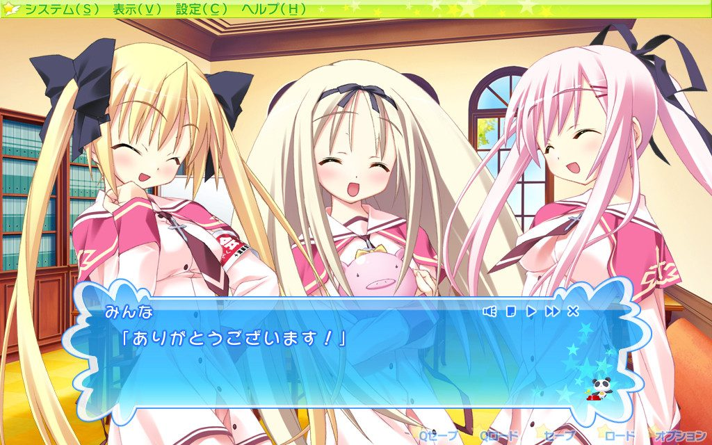
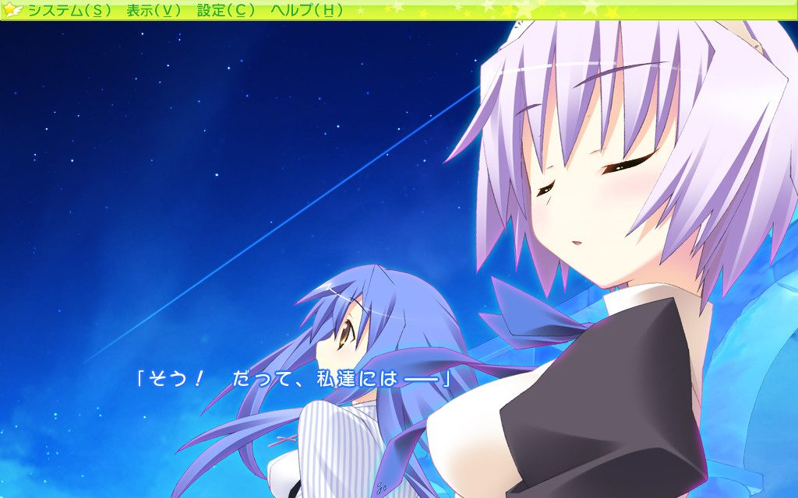
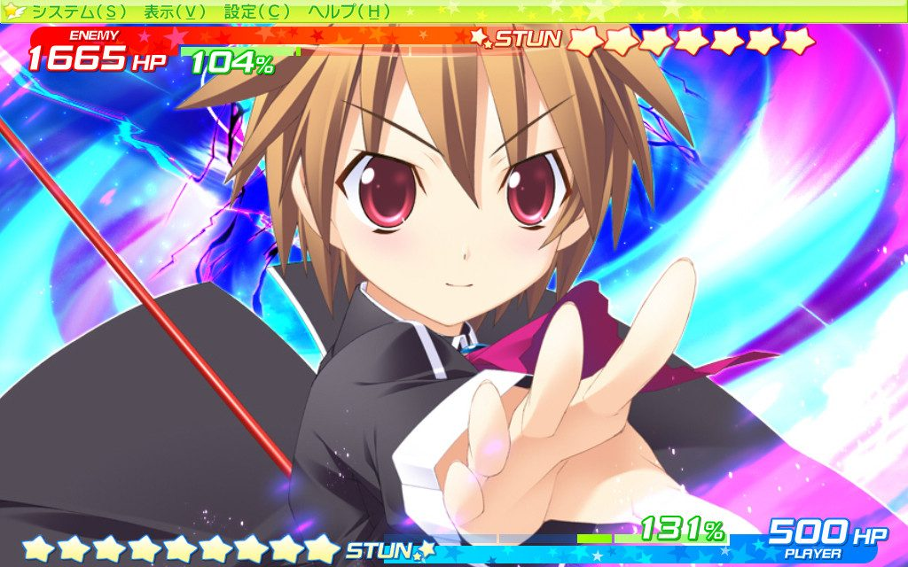
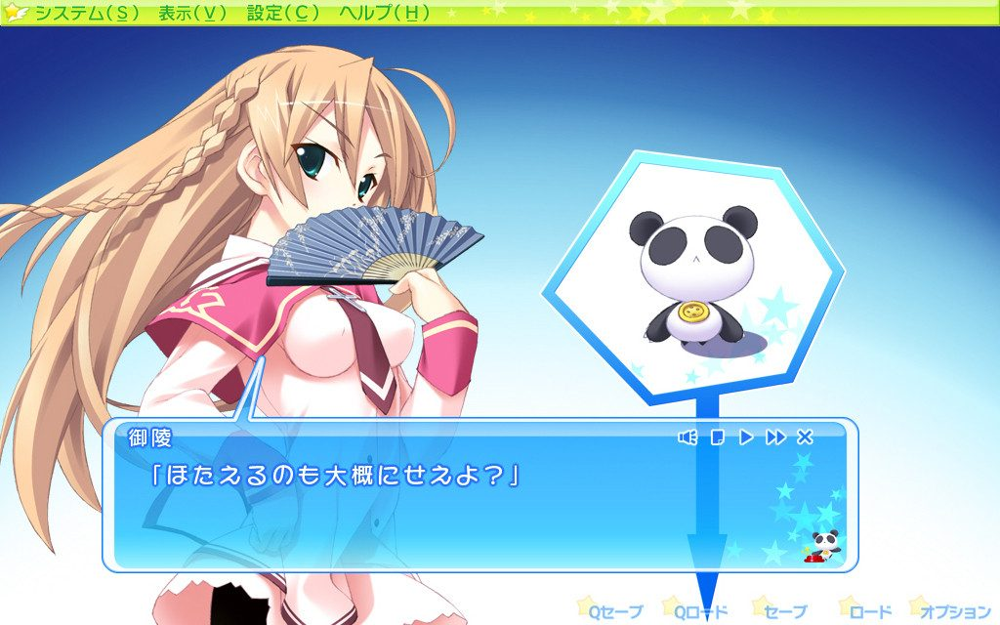
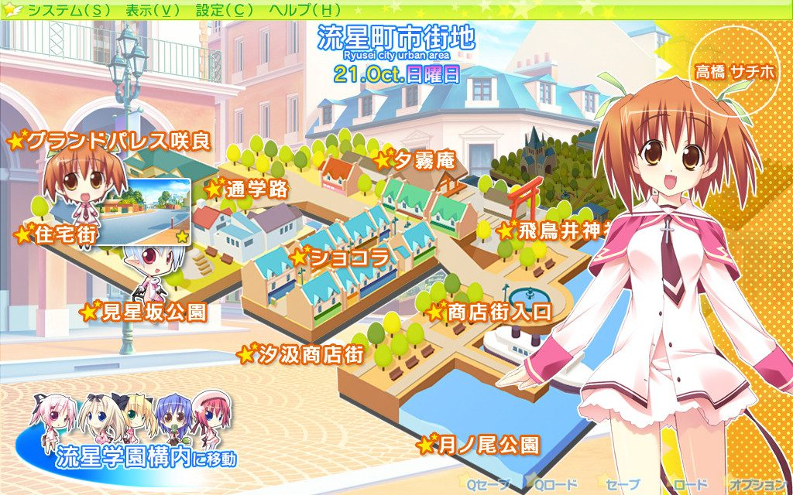
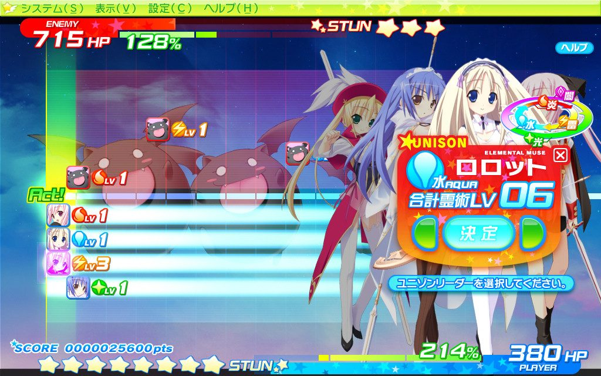
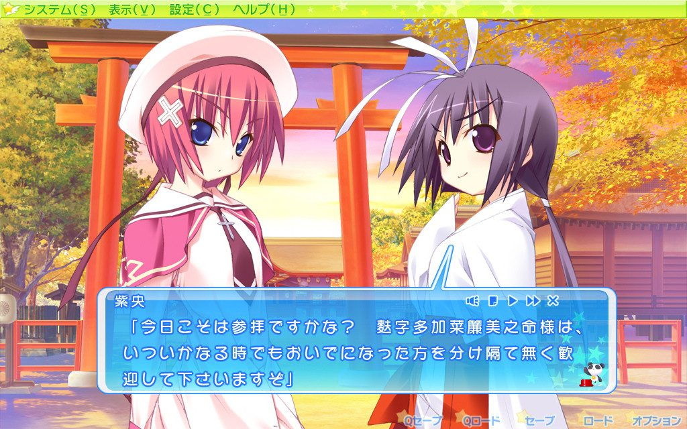

Lillian · Visual Novel Review
Twinkle ☆ Crusaders
ドキドキワクワク生徒会バトルADV — Kira Kira Gakuen Seikatsu!
April · Pemilihan Ketua OSIS
Awal mula Twinkle Series
Twinkle Crusaders atau dikenal dengan KuruKuru merupakan karya tahun 2006, pendiri dari Twinkle Series. Cerita berawal dari Shuu, salah satu murid di Yumemi Gakuen sekaligus protagonis yang donkan nan frugal dengan impian besar makan gyuudon, mencalonkan diri jadi ketua OSIS (Kaichou) karena dikira bakal dapet makanan gratis tiap hari dari kantin!. Shuu akhirnya terpilih menjadi ketua bersama dengan 4 anggota lain yang merupakan heroine dari VN ini, bersama - sama mereka memiliki motto untuk menciptakan Kira Kira Gakuen Seikatsu!

Juni · Kira Kira Gakuen Seikatsu
Menghiasi kehidupan sekolah dan menyelamatkan dunia
KuruKuru memiliki kombinasi antara Slice of Life kehidupan sekolah dan juga menjaga kedamaian dunia dari para mazoku (ras iblis). Alur perkembangan cerita utamanya dipengaruhi 2 hal ini, dimana sering berjalannya waktu mereka makin sibuk ngurusin acara acara sekolah sekaligus perlawanan mazoku yang makin intens mulai dari munculnya 7 jendral iblis sampai ancaman Rikurie (リクリエ) yang menyebabkan dunia akan kiamat pada akhir tahun!. Eits tapi gk perlu khawatir karena protagonis kita adalah sang Maou (Raja Iblis) itu sendiri!

"Tidak perlu khawatir, karena Raja Iblis ada disisi kita!"
KuruKuru gk bakal seasyik ini jika bukan karna karakter2 utamanya. Protagonis kita, Ouma Shuu, Kaichou sekaligus Maou yang satu ini punya sikap gak pekaan dan kebiasaan berhematnya yang diluar nalar sering bikin gw tepok jidad dan ngakak gak terkontrol, selain itu dengan 2 role utama ini Shuu menjadi pivot dari cerita sehingga character development nya menarik dan ngena.

Heroine2 nya juga gk kalah menarik, Misa si Wakil Ketos yang tsundere dan demen banget duel untuk merebut tahta Ketua Osis; Ruriel, Sekretaris sekalipun Kouhai yang polos tapi belagu dan pastinya bukan Tenshi; Nanaka, si Bendahara dengan sifat khas gadis Edoko yang tomboy dan juga Osananajimi dari Shuu; Ria dengan aura Onee-san yang merupakan Senpai dan mantan Ketua Osis yang kini menjadi Penasehat; dan juga Azel, gadis Tenkousei jutek yang misterius. Belum lagi side characters nya yang masing2 punya porsi dalam cerita

Timeline di KuruKuru mengikuti sistem pertanggalan, hampir di setiap harinya kamu bisa memilih heroine atau side character mana yang pengen diladenin, pilihan ini gk hanya nentuin bakal masuk route mana tp jg menentukan event2 common route mana yang didapat. Story nya yang casual dan bisa serius pada momennya bikin VN ini enak dibaca sambil nyantai dan komedinya pun cocok untuk melepas penat, tp kalo kamu merasa terlalu nyantai kamu bisa menantang diri dengan gameplay turn based nya!

September · Battle Part
Turn-Based khas Twinkle Series
Alasan kenapa gw tau dan tertarik dengan VN ini karena gw maen game gacha series nya yaitu Twinkle Star Knights (KuruSuta) dan alasan kenapa gw betah maennya karena gameplay nya yang unik, KuruKuru selaku pondasi Twinkle Series punya mekanis yang lebih disimplifikasi membuatnya lebih tricky sekaligus challenging!
Secara singkat, Turn-Based KuruKuru memainkan line movement, turn dimulai jika karakter sampai pada border (case ini, di pojok kiri) kemudian diberikan 3 opsi yaitu Attack, Charge, atau Unison. Pilihan ini menentukan sejauh mana karakter itu akan terlempar (reposition) di sekitar line, dengan memainkan pilihan itu kamu bisa membuat combo dan mendapat momentum, begitu juga sebaliknya. Tiap karakter jg punya unique skill yang gk boleh sembarangan dipakai karena menggunakan skill gauge, adapun mekanik lainnya seperti jika 2 atau lebih karakter menyentuh border secara bersamaan akan terjadi Unison dan jika karaktermu dan juga musuh yang menyentuh border bersamaan akan terjadi Rumble perlu dipikirkan untuk mempertahankan momentum

Sudah familiar dengan KuruSuta, gw memainkan KuruKuru full di mode Hard yang hasilnya sesuai namanya, SUSAH. Rules nya satu, jangan kasih musuh jalan. Kamu minimal harus mikirin 3 turn kedepan, bakal jadi gimana line nya, maintain momentum sampe menang karna sekalinya musuh dapet turn, antara game over atau kehilangan momentum yang susah lagi dibuild nya dan gk seperti game gacha nya, stat dan team comp disini fix jadi depends ke decision making sehingga cukup nguras otak
November · Trophy Room
Gk Cuma Gameplay
VN yang rilis perdana tahun 2006 ini punya kualitas lebih tinggi dari kebanyakan VN modern lain!, pertama Sprite nya Heboh, bikin karakterisasi dan reaksi2 nya makin fluid dan impactful, kemudian mekanisme pilihan pertanggalnya punya banyak kombinasi dan scene2 exclusive, bahkan bisa masuk rute side character dan comedy ending, makanya gk heran length nya very long (>50 jam).

Selain kontennya yang gk nanggung, KuruKuru juga ada sistem Trophy yang bisa didapatkan sepanjang story, Trophy2 tersebut bisa diliat di Trophy Room di Main Menu. Hal lain yang gk kalah uniknya, di VN ini kamu juga bisa nemuin Easter Eggs lho, seperti jika kamu membuka gamenya di hari valentine, kamu bakal dapet scene heroine2 yang ngasih coklat atau pada hari character berulang tahun, kamu juga bisa dapat scene khusus!, gk sampe disitu, di versi PSP nya kamu bisa berpapasan sama character dari VN lain seperti Feena dari Brand August sampai Rin dan Saber dari Fate!
Desember · Akhir Tahun
Final Verdict
Strong point dan hal yang paling gw demen dari VN ini tentu ada di comedy nya, yang didukung tingkah laku konyol dan keasikan dari character2 nya. Sudah lama rasanya gw gak ketawa selepas ini baca VN semenjak maen Rewrite dan Heaven Burns Red. Sayangnya gw bukan tipe orang yg betah baca SoL ataupun School Life sehingga terkadang terasa dragging dan boring, seringkali di beberapa route heroine. KuruKuru cocok dibaca jika kamu mencari bacaan yang casual nan nyantai atau jika kamu mencari VN dengan mekanik2 yang intinya gk cumen dibaca, tapi juga aktif dimainkan. Kamu bisa memainkan versi Remaster nya jadi gk usah khawatir kalo nanti bakal burik karna VN ini cukup jadul